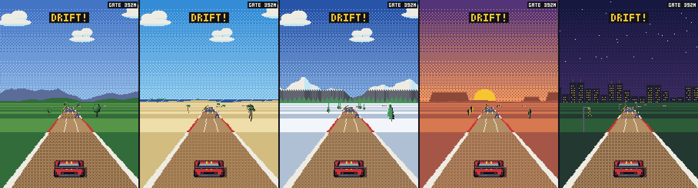
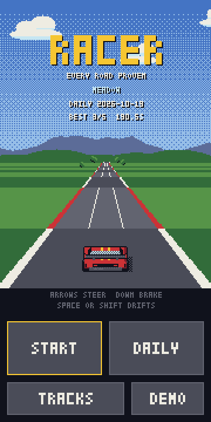
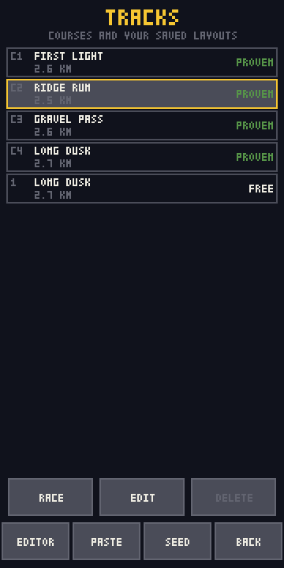
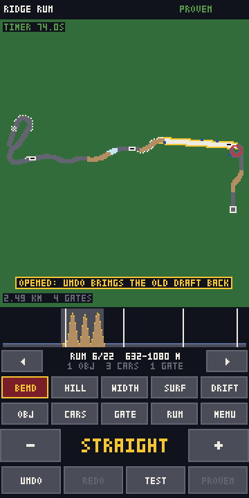
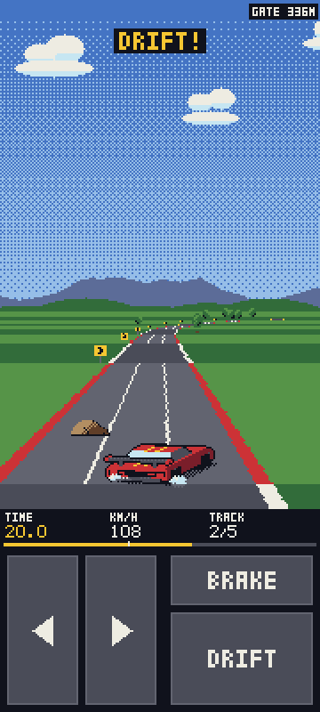
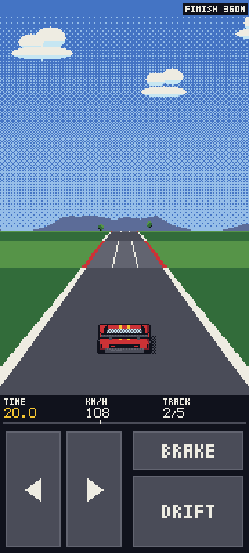
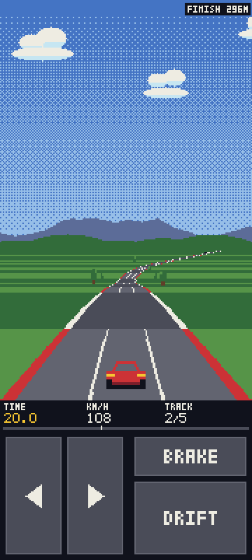
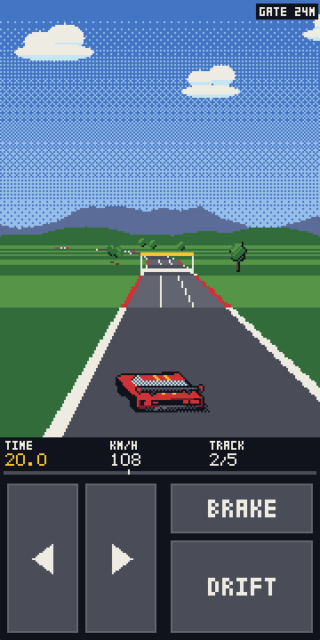
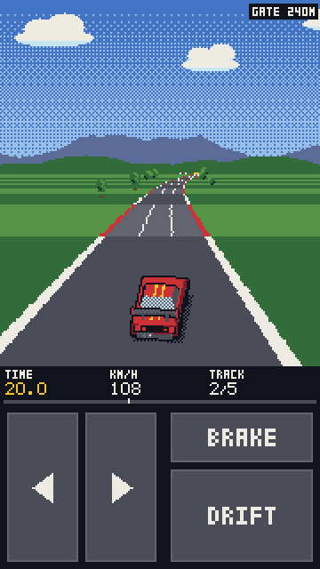
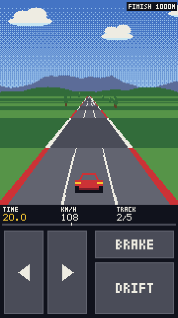

A portrait, retro pseudo-3D racer for one thumb on each
side of a phone. A run is five generated tracks against a checkpoint
timer, with a fork and an upgrade after each. Every one of those tracks
has been driven by a human-like bot, on every car you could arrive with,
before it is shown to you.
"racer" is a working codename: the game has no name
yet, and it's an early prototype. The iPhone beta is free through TestFlight.
Android dev builds, the source and the design doc are for testers with access
to the repository (dev build).
SEASONAL · OCT 19 – NOV 1 · EVERY YEAR
Halloween season
From October 19 to November 1 (by the same UTC day the
daily run uses) every biome turns into its spooky twin. The title says
HAPPY HALLOWEEN between two jack-o'-lanterns, bats cross a big moon, and
the roadside is scarecrows, dead trees, gravestones and pumpkins. Only
the paint changes: the tracks, the timers, the daily, ghosts and share
codes are exactly the same as the rest of the year.
PUMPKIN PATCH (meadow): stubble fields at dusk, a harvest moon, a row of pumpkins, scarecrows.
GHOST COVE (coast): a black sea in fog bands, a shipwreck, a pale moon, dead trees on the dunes.
HAUNTED PINES (alpine): dead black pines in mist on moonlit snow under a cold moon.
BLOOD MOON MESA (desert dusk): a huge red moon behind black mesas, withered cacti with a crow.
MONSTER CITY (night city): orange windows, a crooked tower with a green window, green street lights.
Each twin is one more sixteen-colour table that changes only the six scenery colours; the road, the car, the HUD and the hazards keep theirs, so everything still reads the same.
What's in the build
DAILY run
One run a day, the same for everyone: its seed is a hash of the UTC
day, so it turns over at midnight UTC everywhere. The game builds all
nine of the day's tracks in the background while the title is up, so
DAILY starts at once; the title keeps today's tries and best.
seed = mix64(tag, UTC day)
Your ghost, and RETRY SEED
Finish a track and your fastest drive becomes a ghost: a pale,
see-through copy of your car replayed from its input log, with your
time against it at every gate. RETRY SEED races the same five roads
again; the daily's ghosts work the same way.
GHOST -0.8S
TRACKS and the editor
Four bundled courses, your saved layouts and an in-game editor: a
map and an elevation strip, bends, hills, width, surfaces, drift
corners, cars and gates. PROVE runs the same bots on your layout;
a proven one races timed and shares as an RL… code,
a draft as RD…. FROM SEED forks any generated track.
FIRST LIGHT · RIDGE RUN · GRAVEL PASS · LONG DUSK
Five biomes
A run is a day on the road: MEADOW, COAST, ALPINE, DESERT DUSK and
NIGHT CITY, one per track, each with its own sixteen colours, horizon
layers and roadside flora. Scenery only: no biome changes how a
track drives.
6 scenery colours change · 10 stay fixed
Sound and music
Engine, tyres, gates, boosts, spins, the last five seconds and the
title music, all generated by a standard-library Python script with
no samples, byte for byte reproducible and checked in CI.
just gen-audio
Procedural sprites
Every sprite is drawn in code at startup. Cars are small solid
models lit from the upper left and dithered between tones; the
player's hatch has lean, drift and spin frames with brake lamps;
traffic comes as a hatchback, a van and a pickup.
Art::new ≈ 6.5 ms, once

MEADOW · COAST · ALPINE · DESERT DUSK · NIGHT CITY

The title with today's daily.

TRACKS: courses and your layouts.

The editor: map, elevation, tools.
How a track is proven
Procedural racers usually generate a road and hope. This one
builds a track, then has two bots drive it, and only a track that passes
every check is ever shown. Not "probably drivable": checked, on every
loadout the player can reach it with.
01 Two drivers
A perfect bot is the ceiling: it plans the whole track's
speed at 93% of grip and searches which corners to drift. A
human-like bot is the floor: it reacts to 150 ms old
information, can't see over crests, aims a little off its line,
lapses now and then and overcooks the odd corner.
human: 150 ms late · 85% grip · 1% lapses/s
02 The timer is measured
Each gate's time is calibrated from sixteen human-bot drives on the
weakest car you could arrive in, plus a margin. Then fresh human
drives, with noise the calibration never saw, must keep that margin
on every reachable loadout, 15 times out of 16.
margin: 2.0 s on track 1 → 1.0 s on track 5
03 Redraw, repair, fall back
A draft that fails is redrawn; the best failure has its worst
section softened; as a last resort comes a gentle road every car
takes flat out. Drift-required corners must be passable with a drift
and cost a grip-only driver at least 1.5 s.
8 redraws → 2 repairs → fallback
BATCH GATE · CI■ ■ ■
just balance 200 run seeds · 1,800 tracks
unvalidated tracks ...... 0 (must be 0)
fallback tracks ......... 1.33% (must be ≤ 2%)
human runs lost ......... 3.9% (must be 3–15%)
perfect bot time left ... 6–18 s (every track)
human over perfect ...... 8–30% (every track)
Numbers from the M1 build, recorded in
NOTES.md.
CI runs the whole batch on every pull request; the human bot's numbers are
being checked against real playtest runs.
How it plays
Five tracks, four forks
About a minute a track, split by checkpoint gates. Time left at one
gate carries to the next; running out is the only way to lose. After
each track, pick the easier road or the harder one, each with its own
upgrade: engine, turbo, tyres, brakes or charger. They stack.
Drift to boost
Hold drift into a bend to slide wide and charge a boost; let go to
spend it. Early tracks only hint at it. From track 3 some long,
tight carousels are signed with chevrons and can't be made in time
without a drift.
Hills, traffic, things by the road
Blind crests hide what is over the top. Slow traffic in packs, one
lane always free. Posts on the outside of bends, rocks in the lane,
gravel, ice and puddles, and narrows on harder tracks. A hit spins
you out and costs seconds.
Thumbs first
Left, right, brake and drift pads under the road, lifted clear of
Android's gesture bar. Steering ramps up over 200 ms so a tap is a
nudge. Keys and a gamepad work too, and all of them reduce to the same
one byte per tick, so a replay can't tell them apart.
Frames from the renderer
These are the renderer's golden frames: fixed scenes whose
pixel digests the test suite pins on Linux, macOS and Windows. The site
build paints them fresh from the code, at 2×, nearest-neighbour.

A signed drift corner, the charge bar filling.

Climbing: the road ends at the crest.

Over the top, the road appears.

A gate at a hairpin's entry.

A sweep, on a shorter phone.

The straight to the finish.
The meadow's sixteen colours. Every pixel the game draws is
one of a table like this: each biome, and each Halloween twin, swaps
only the six scenery colours, and the tests hold each rendered frame to
its table. The art is procedural pixel art, drawn in code.
Under the hood
Same seed, same race, everywhere
The simulation is a Rust crate with no dependencies and no engine: a
fixed 120 Hz step, its own trig instead of libm, SplitMix64 and PCG32
streams, integer tracks. Two hundred noisy bot runs, each replayed
from its log, hash to the same digest on Linux, macOS, Windows, an
Android emulator, a Pixel 10 and a Lenovo tablet.
0x4a5c1bcc8fc9fdfb
Versioned outcomes
A run is a seed and an input log. A sim epoch names a digest over
pinned tracks and a corpus of golden runs, so a change that would
move a replay's outcome fails the tests until the epoch is bumped.
SIM_EPOCH = 1
A software road
The classic pseudo-3D road, rastered in Rust into one 180-pixel-wide
buffer and uploaded as one texture; Godot only presents it. The height
floats with the phone's aspect, so a taller phone sees more sky, not a
smaller car.
180 × 320–400 · 16 colours
Kind to the battery
120 Hz on a charger, 60 on battery, and backing off when the phone
runs hot, through
godot-device-power.
A stripped Godot engine keeps the APK near 28 MB.
charger 120 · battery 60 · hot 30
Dev build
Every push to main replaces the rolling
dev prerelease with a new APK. It is a prototype: expect
rough edges. GitHub sign-in and repository access are
required; there is no store release.
Android arm64
Download the APK on your phone.
Open it, and let your browser install unknown apps when asked.
Later dev builds install over it. Switching between a CI build and
a local build needs an uninstall, which deletes saved runs.
Every run you finish or quit is saved on the phone as its seed and
input log. just pull-runs copies them off and sets each
track's time, closest margin and spins beside sixteen human-bot drives
of the same track: that comparison is how the bot gets tuned.
Rust (pinned in rust-toolchain.toml), Godot
4.7.2 and just. The Android recipes also need the Android SDK
and NDK and JDK 21; the
README
has the details.
git clone https://github.com/cascadiacollections/racer
cd racer
just test # sim, renderer, golden runs; no Godot needed
just run # build the extension and play on the desktop
just balance # build and prove 1,800 tracks
On a phone: just android-template once, then
just android builds, installs and launches;
just android-digest checks the phone agrees with this
machine bit for bit.
Keys
←→ / AD
Steer (ramps to full lock in 200 ms)
↓ / S
Brake; the throttle is automatic
Space / Shift
Drift (hold, with some steering)
Esc / P
Pause
What "prototype" means here
The simulation, the generator and the solver are built and gated in CI.
It is playable on a phone from the first track to the fifth, with forks, upgrades, pause and a demo mode.
A daily run, ghosts, an in-game track editor with share codes, five biomes, sound and music.
CI builds a signed, attested APK from every push to main.
No name yet: "racer" is a working codename.
The art and sound are procedural first passes, drawn and generated in code; levels and looks are still being tuned on real phones.
Not on any store. Balance moves between builds; a run from an older sim epoch keeps its seed and nothing else.
While you wait: Salt Line
Same studio, same rules: a deterministic Rust simulation that proves every
level fair before you see it. Salt Line is an artillery roguelike: read the wind,
break the ground, make every shell count. It has a free demo and is coming to Steam.